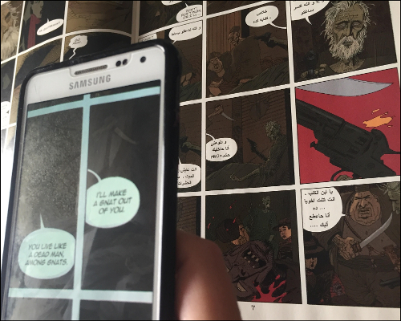
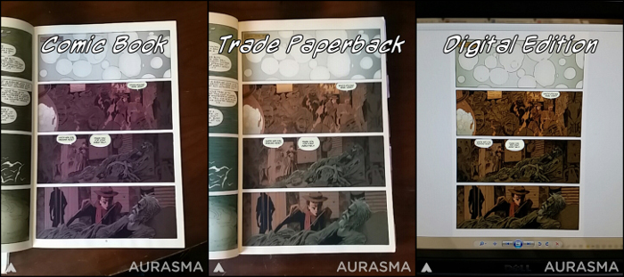

Comics ARchitected: Translating the Languages of Comics in AR
Madeline B. Gangnes
Project Description
Comics as a medium has much in common with architecture. The visual surface of a comic is not only drawn, but constructed using images and the spaces between them. Skilled comics artists can manipulate a reader’s perception of motion, space, and time through their positioning of certain visual elements. The meaning created by the visual architecture of a comic is easily disrupted, even by small alterations. Therefore, when augmenting comics, it is necessary to consider their structural integrity.
Many comics incorporate foreign languages in their dialogue. Though it’s not usually essential to understand these languages to read the comic, knowing their meanings can enhance the reader’s experience. But trying to look up translations is difficult and time-consuming enough that most readers don’t bother. Augmented reality is well suited to alleviating this issue, as it can be used to superimpose translated text over word balloons and narration boxes. However, this technique must pay careful attention to how comics are constructed. The goal of comics translations—AR or otherwise—should be to not only present a faithful translation of a comic’s textual language, but to match, as closely as possible, its visual language. Features such as font, color, and word balloon shape, among others, must be translated along with the content of the text.
Comics ARchitected demonstrates this process by augmenting The League of Extraordinary Gentlemen comic book series by Alan Moore and Kevin O’Neill. League includes untranslated French and Arabic in its word balloons. This Aurasma ARC incorporates translated dialogue from Jess Nevins’s Heroes & Monsters: The Unofficial Companion to the League of Extraordinary Gentlemen in customized text-and-image overlays that correspond to foreign language speech bubbles in issue #1 of League. Comics ARchitected allows readers to use a phone or tablet to read translations of non-English languages in League directly on the page with minimal disruption to the comic’s architecture.
Access Instructions
Download Aurasma to your mobile device and follow the “mbgangnes” channel. This augment works withThe League of Extraordinary Gentleman issue #1 original floppy comic book, the bound graphic novel, and digital versions of the comic.
Documentation


Additional Links
Purchase The League of Extraordinary Gentlemen, Vol. 1 (2003, DC Comics)